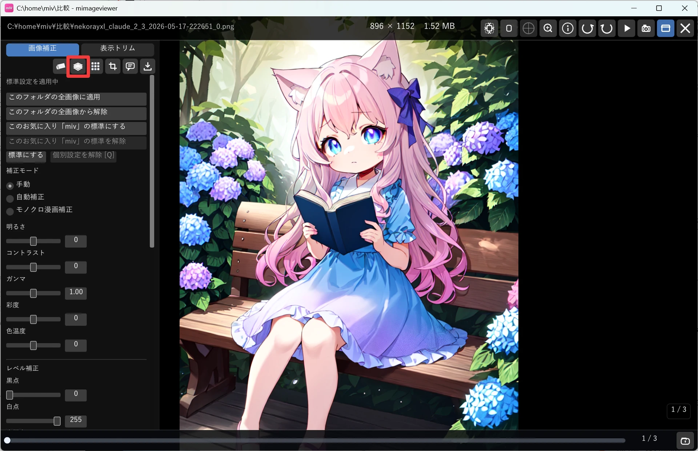
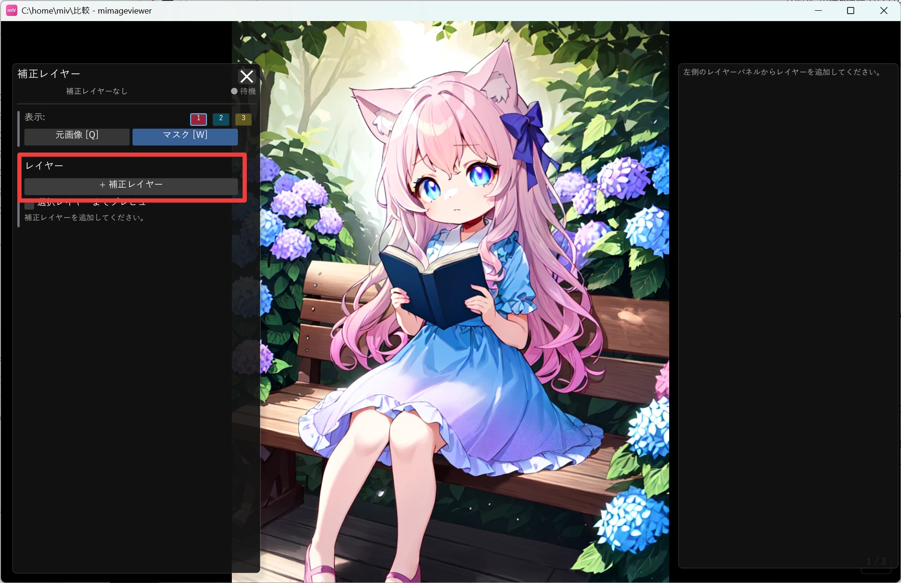
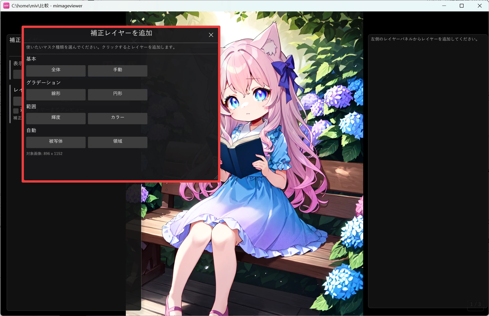
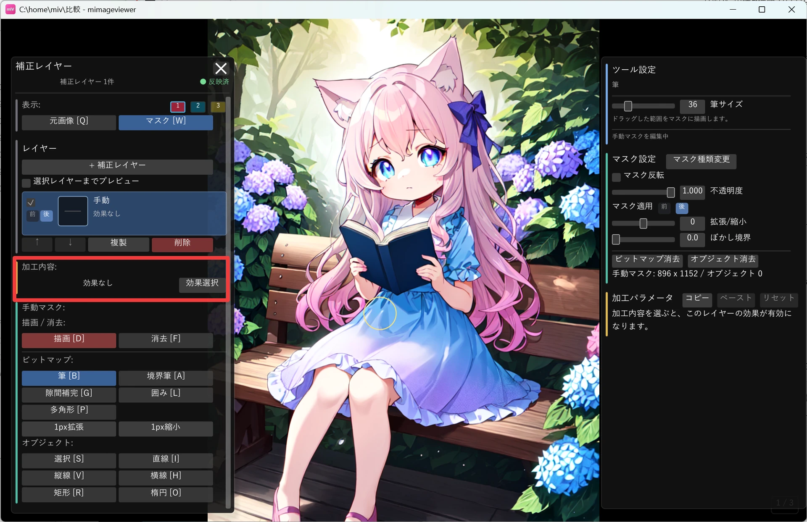
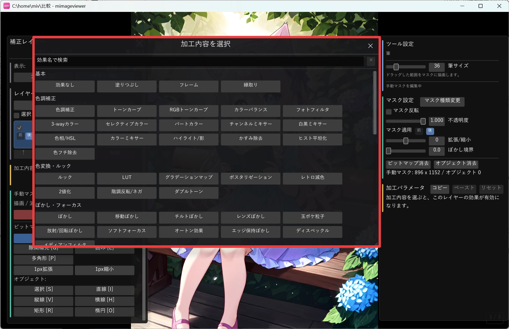

補正レイヤーで部分的に補正
「背景だけぼかしたい」「人物だけ明るくしたい」「周辺だけ少し暗くしたい」—— 画像全体ではなく、範囲を決めて部分的に効果をかけたいときは補正レイヤーを使います。 マスクで「どこに」効果をかけるかを指定し、その上に効果を重ねる非破壊の仕組みです。
補正レイヤーを開く
画像フルスクリーンで Ctrl+G を押すと、補正レイヤーをすぐに開けます。開始キーは「操作カスタマイズ…」で変更できます。
- 画像をフルスクリーンで開きます
- 画面左端にマウスを寄せ、画像補正パネルを表示します（右端は情報パネル、上端はホバーバー。クリック表示モードでは左端の呼び出しバーをクリック）
- ヘッダー右側の処理順アイコン列から、消しゴムと隠蔽加工の間にある補正レイヤーアイコンをクリックします
補正レイヤーパネルを開いている間は、通常のフルスクリーン操作よりもマスク編集用の操作が優先されます。 パネルを閉じるには右上の ×、または Esc を使います。

基本的な流れ
- レイヤーを追加します。追加時に最初のマスク種類を選びます（後から変更も可能）
- マスクを作成します。手動で塗る、グラデーションをかける、被写体を検出するなど、範囲の決め方はいろいろ選べます
- 効果を追加します。マスクを作っただけでは何も変わりません。効果を選んで初めて加工が有効になります
- 境界を整えます。マスク反転、フェザー（ぼかし）、拡張 / 縮小、不透明度で仕上げます
- 必要ならレイヤーを複製し、別の効果をさらに重ねます（1 レイヤーにつき効果は 1 つ）
レイヤーを追加してマスクの種類を選ぶ
補正レイヤーパネルの 「＋ 補正レイヤー」 ボタンを押すと、マスク種類の選択画面が開きます。

続いて開く「補正レイヤーを追加」画面で、使いたいマスクの種類を選びます。ここで選んだ種類がマスクの土台になります（後から「マスク種類変更」で差し替えることもできます）。

| 種類 | 向いている用途 |
|---|---|
| 全体 | 範囲を絞らず画像全体に効果をかける。まず全体にかけてから、要らない部分を削除マスクで抜く使い方に向く |
| 手動 | 筆・矩形・多角形・囲みなどのツールで、マスクを自分の手で描く |
| 線形グラデーション | 上だけ暗くする、下だけ明るくするなど、なだらかに変化させる |
| 円形グラデーション | 主役の周辺だけ落とす、中央だけ明るくする、スポット的にぼかす |
| 被写体 | 人物やキャラクターを大きく選び、反転して背景だけ加工する |
| 輝度 / カラー | 明るい部分・暗い部分だけ、特定の色に近い部分だけを選ぶ |
| 領域 | 色や境界で分かれた範囲をクリックしてまとめて選ぶ |
画像全体をまとめて調整したいときは 「全体」 を選びます。範囲を絞る必要がなく、明るさ・色などをそのまま画像全体へ重ねられます。
「手動」 は、マスクを自分の手で描くための種類です。「筆で塗った範囲を加工する」「矩形で囲んだ範囲を加工する」といった操作は、すべてこの手動マスクに含まれます。 筆・境界筆・囲み・多角形・矩形・楕円などの描画ツールが用意されていて、それらで塗った / 囲んだ範囲がそのまま効果のかかる範囲になります。 グラデーションや被写体のように自動で範囲を作るのではなく、「ここ」と思った場所を手で塗って指定したいときに選びます。
「背景だけぼかす」「人物だけ明るく」は、被写体マスクを作ってからマスク反転を使うかどうかで切り替えられます。 反転しなければ選んだ範囲そのものに、反転すればその外側に効果がかかります。
効果を追加する（これで加工が成立）
マスクは「どこに」かけるかを決めるだけなので、マスクを作った時点ではまだ画像は変わりません。 レイヤーの「加工内容」にある 「効果選択」 ボタンを押して効果を選ぶと、そのマスクの範囲に効果がかかり、加工が有効になります。

「加工内容を選択」画面には、色調補正・ぼかし・色変換など多数の効果が並びます。上部の検索欄に名前を打ち込んで絞り込むこともできます。効果を選ぶと、必要なパラメータを調整できるようになります。
画像の一部を消したり自然に埋めたいときは、「基本」の 修復／塗り を選びます。 スポイト色の塗り、陰影を残す塗り、周囲からの修復、コピー元を指定するクローンを、1つの効果パネルで切り替えられます。 周囲からの修復で広い模様が細かく崩れる場合は、パッチサイズを「自動」から「標準」または「大きめ」へ切り替えて試せます。

追加マスク・削除マスクで微調整
被写体マスクや領域マスクなどで拾いきれなかった部分は、そのまま完璧を目指さず手描きで補います。
- 追加マスク：ベースマスクで拾えなかった部分を、手描きで効果範囲に足します
- 削除マスク：ベースマスクが拾いすぎた部分を、手描きで効果範囲から外します
追加 / 削除マスクは、ベースマスクそのものを壊しません。「全体」マスクを使う場合は、除外したい部分だけを削除マスクで描くと扱いやすくなります。 筆・境界筆・囲み・多角形・矩形・楕円などツールが数多くそろっているので、まずは実際にボタンを押して描き心地を試しながら覚えるのが近道です。
プレビューで確認しながら仕上げる
効果がどこにどのくらいかかっているかは、次のキーでその場で確認しながら調整できます。
| キー | できること |
|---|---|
| W | 選択中レイヤーのマスク表示を ON / OFF（マスクの形を確認） |
| Q | 補正レイヤー直前の元画像を表示 ON / OFF（効果のかかり方を比較） |
| 右 Ctrl / Ctrl 押下中 | 一時的に元画像寄りの比較表示 |
| Ctrl+Shift 押下中 | 選択中レイヤーだけを外した比較表示 |